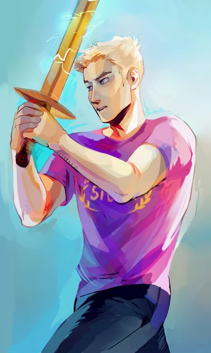
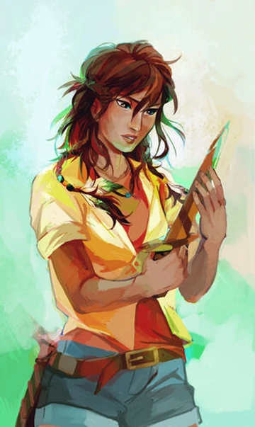
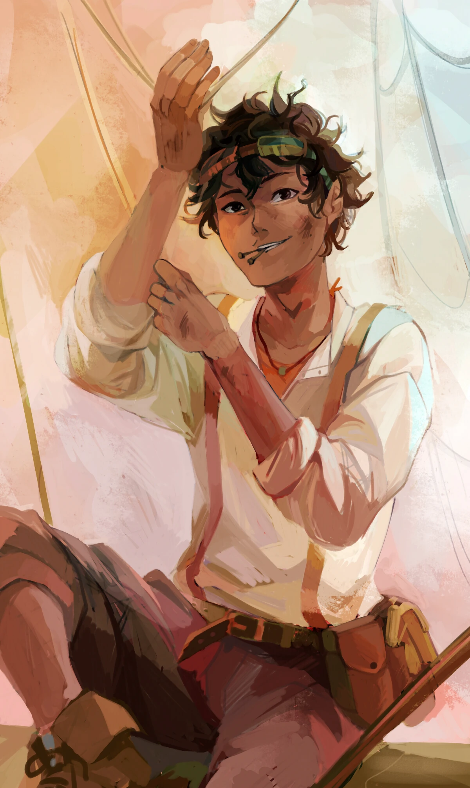
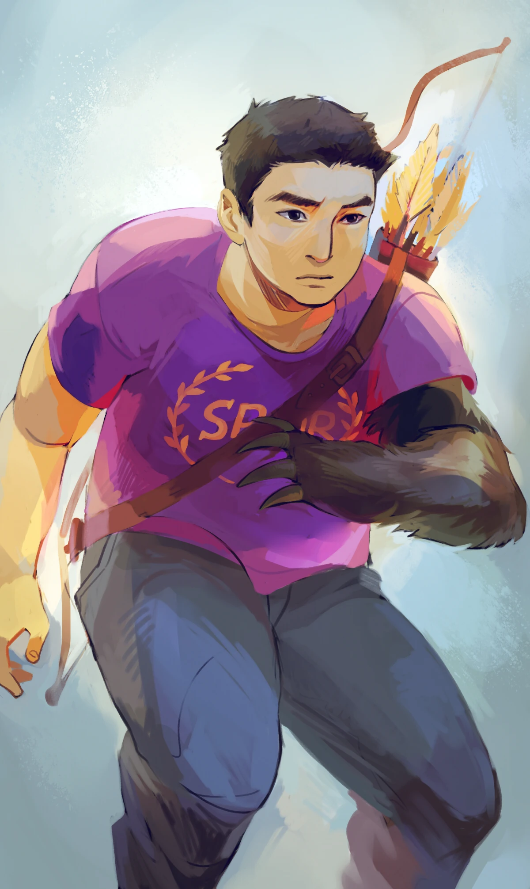
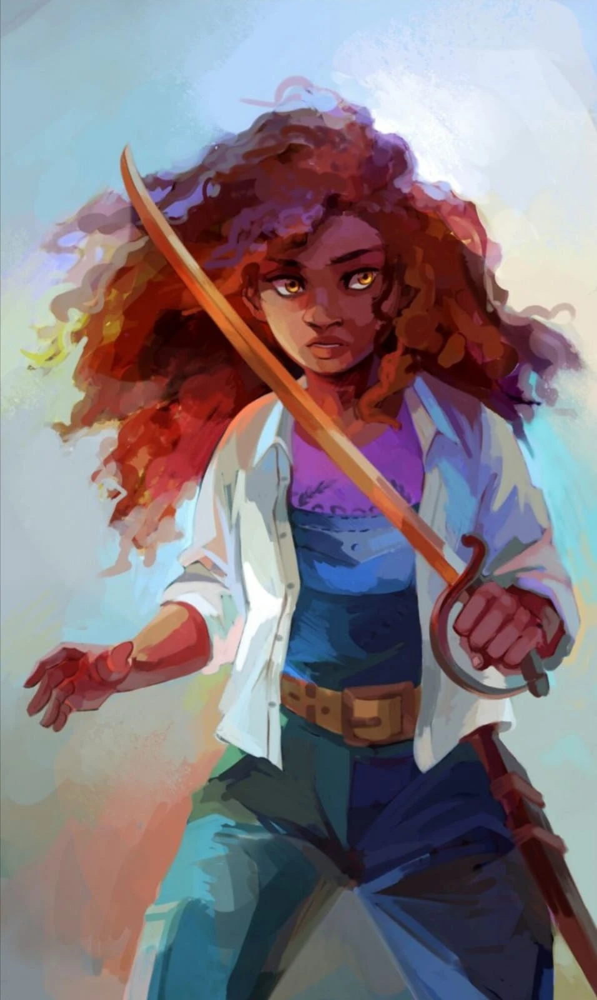
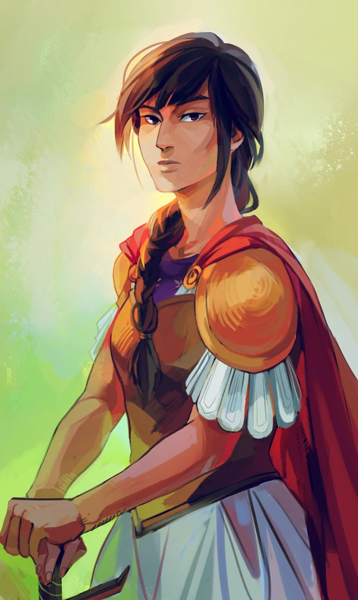
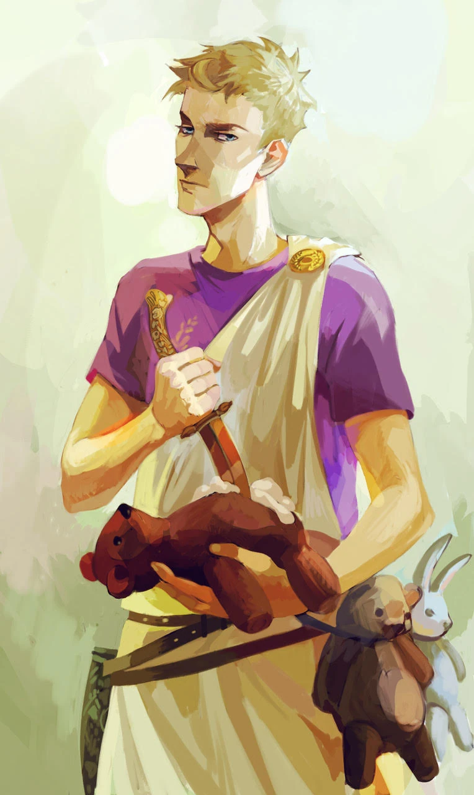
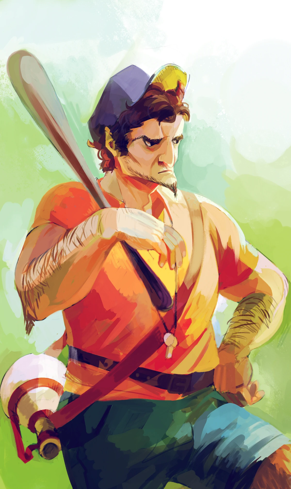

Jason Grace:
semidio figlio di Giove, dotato di poteri legati al controllo
dei venti e delle tempeste.
|

Piper McLean:
semidea figlia di Afrodite, Piper ha il potere di persuasione
e può convincere le persone a fare ciò che vuole.
|

Leo Valdez:
semidio figlio di Efesto, Leo è un inventore geniale con un
talento per costruire macchine straordinarie, è spiritoso e
amichevole.
|

Frank Zhang:
semidio figlio di Marte, Frank ha il potere di trasformarsi
in diversi animali.
|

Hazel Levesque:
semidea figlia di Plutone, Hazel è stata riportata in vita
dall'Oltretomba e ha un profondo senso di colpa per il suo
passato.
|

Reyna Ramirez-Arellano:
semidea figlia di Bellona, dea della guerra. È coraggiosa,
determinata e si impegna a proteggere il suo popolo.
|
Will Solace:
semidio figlio di Apollo, è il capo del campo di cura al
Campo Mezzosangue. È gentile, altruista e ha una grande
abilità nella guarigione.
|

Ottaviano:
semidio figlio di Apollo, è un personaggio ambizioso e
manipolativo che cerca il potere e la gloria a ogni costo.
|

Coach Gleeson Hedge:
un satiro che funge da mentore per i semidei e li
accompagna nelle loro missioni.
|